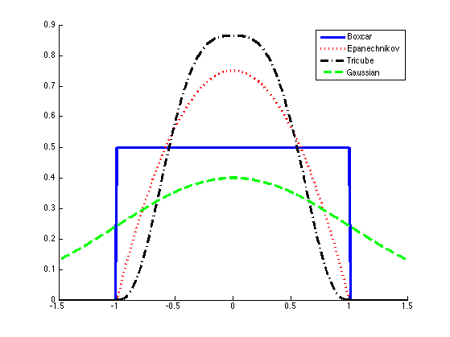

Plot different smoothing kernels
box = @(u) (1/2)*(abs(u) <= 1);
epa = @(u) (3/4)*(1-u.^2).*(abs(u) <= 1);
tri = @(u) (70/81)*(1-abs(u).^3).^3.*(abs(u) <= 1);
gauss = @(u) (1/sqrt(2*pi))*exp(-u.^2/2);
fns = {box, epa, tri, gauss};
names = {'Boxcar', 'Epanechnikov', 'Tricube', 'Gaussian'}
xs = -1.5:0.01:1.5;
[styles, colors, symbols, str] = plotColors();
figure; hold on;
for i=1:numel(fns)
f = fns{i};
fx = f(xs);
b = xs(2)-xs(1);
fprintf('integral is %f\n', sum(fx));
plot(xs, fx, sprintf('%s%s', styles{i}, colors(i)), 'linewidth', 3);
end
legend(names);
printPmtkFigure('smoothingKernelPlot')
names =
Columns 1 through 3
'Boxcar' 'Epanechnikov' 'Tricube'
Column 4
'Gaussian'
integral is 100.500000
integral is 99.997500
integral is 100.000000
integral is 86.767754
